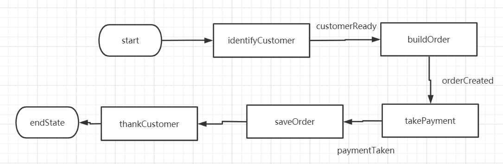

前言
一般我们在构建基于模板的Web应用时，会使用SpringMVC，模板技术可能会选择jsp、thymeleaf、freemarker等，如果Model、View、Controller各层次之间的交互和跳转比较简单的话，自然是再好不过的了，但如果比较复杂的话，那么一般的MVC模式就显得吃力不讨好了。
SpringWebFlow是一种基于SpringMVC的web流程框架，我们可以用它来管理Model和View的交互，是的，你没看错，甚至连一个Controller也不需要写，就可以完成一整个Web应用。
我们的Web应用一般都是以一个个流程组成的，比如现在有这样一个需求，披萨店需要一个Web应用来让客户订购披萨，将整个应用转换为流程，如下图所示。

整个流程无非就是识别用户->创建订单->支付订单->保存订单，使用SpringWebFlow可以很直观的将它实现，而不需要写Controller层。
流程基本概念
在Spring Web Flow中，有三个主要的组成部分，即状态(state)、转移(transition)、流程数据。
假设一个完整流程是这样的。
A->B->C
那么A、B、C三个节点就是状态，而转移是三个节点之间的横线，它关注的是如何从一个状态转到另一个状态，在几个节点之间传递的就是流程数据。
状态
状态有5种类型。
| 状态类型 |
作用 |
| 行为（Action） |
简单地执行逻辑 |
| 决策（Decision） |
即分支节点，根据运行结果决定走向哪个状态 |
| 结束（End） |
执行结束状态后，整个流程宣告结束 |
| 子流程（Subflow） |
在当前状态的上下文中启动一个全新的流程，子流程走完以后继续原流程的执行，也就是说一个节点代表一个流程 |
| 视图（View） |
将视图返回给用户，用户使用完视图后，才继续执行原流程 |
视图状态
一般来说，如果没有视图状态，则整个流程是根据用户最开始的输入自动执行的。
而如果在流程中中定义了一个视图状态（View State），则会向用户展示一个视图，用户通过视图进行输入，从而影响到流程后续走向。
1
| <view-state id="welcome" view="greeting" model="flowScope.paymentDetails"/>
|
用view-state标签来表示视图状态，如果只提供一个id，比如id=”welcome”，则代表该状态的id为welcome，其对应的视图名也为welcome；提供view属性可以指定该state对应的view名；提供model属性可以指定该view绑定一个model对象，比如上面的例子，从flow作用域中取出paymentDetails对象，并交给greeting视图使用。
行为状态
简单执行一些逻辑，并转移到另一个状态。
1
2
3
4
5
6
7
| <action-state id="saveOrder">
<evaluate expression="pizzaFlowActions.saveOrder(order)"/>
<transition to="thankYou"/>
</action-state>
|
evaluate子标签可以填一个表达式（可以是SpEL、OGNL、Unified EL），比如上面的例子中，代表要执行pizzaFlowActions这个bean里的saveOrder方法。
transition子标签指明下一个状态走哪个，上面的例子中，下一个状态是thankYou。
决策状态
根据表达式的返回值是true或false决定后续往哪个状态走。
1
2
3
4
5
6
7
8
9
| <decision-state id="checkDeliveryArea">
<if test="pizzaFlowActions.checkDeliveryArea(customer.zipCode)"
then="addCustomer"
else="deliveryWarning"/>
</decision-state>
|
比如上面这个例子中，根据pizzaFlowActions的checkDeliveryArea方法的返回值决定下一个状态走addCustomer还是走deliverWarning
子流程状态
即一个节点对应一个独立的流程，这个独立流程走完后才返回原流程执行，可以类比成在一个方法中调用另一个方法。
1
2
3
4
5
6
7
| <subflow-state id="order" subflow="pizza/order">
<input name="order" value="order"/>
<transition on="orderCreated" to="payment"/>
</subflow-state>
|
上面这个例子中，状态名为order，它所对应的子流程为pizza/order，input标签指明了子流程的输入，即order对象，transition标签指出了当子流程的end-state即orderCreated执行完后，原流程order将转移到payment状态。
结束状态
结束状态执行完后，接下来发生什么？不一定
- 如果这个end-state属于一个子流程，则这个end-state的id将作为一个事件，决定原流程接下来走哪个状态，可以参照子流程状态的例子。
- 如果end-state设置了view属性，则将展示指定的视图（相对于流程路径的视图模板），如果view属性加上externalRedirect的话，可以重定向到流程外部的页面；如果view属性加上flowRedirect前缀，将重定向到另一个流程中。
- 如果既没有设置view也不是属于子流程，则流程结束，等待用户输入并执行下一个流程。
转移
转移是流程中各状态的连接线，可以用于action-state、view-state、subflow-state（end-state是最终节点，而decisition-state不需要指定transition）。
一个最简单的转移可以这样定义。
1
| <transition to="customerReady"/>
|
即直接指明了后面转移到customerReady状态，只有在当前状态单一出口时才可以这样定义。
如果当前状态有多个出口，那么就需要根据on属性来决定走哪个转移，on属性绑定了一个事件。
比如
视图状态是根据用户在视图的输入产生相应的on事件，在行为状态中，事件是evaluate表达式执行的结果，在子流程状态中，事件是子流程的结束状态的id。
或者也可以根据抛出的异常决定转移到哪个状态。
1
| <transition on-exception="com.springinaction.pizza.service.CustomerNotFoundException" to="regisrationForm"/>
|
全局转移
如果某些转移需要被引用多次，可以将其定义为全局转移。
transition可以定义为global-transition的子元素。
1
2
3
4
5
| <global-transition>
<transition on-exception="a" to="b">
</global-transition>
|
比如上面这个例子，所有的状态都将拥有这个转移，当前状态抛出a异常，则转移到b状态。
流程数据
流程数据是保存在变量中的，可以设置这些数据的作用于，是只能在视图里访问？还是只能在当前流程访问？还是能被多个流程访问？
最简单的变量可以这样定义，这种变量将在整个流程内有效。
1
| <var name="cutomer" class="com.springinaction.pizza.domain.Customer"/>
|
也可以用evaluate或者set元素来声明变量，比如下面这样。
1
| <evaluate expression="T(com.springinaction.pizza.domain.Topping.asList())" result="viewScope.toppingsList"/>
|
上面的例子中，执行了expression，并将表达式结果放到viewScope中的toppingsList变量内。
1
| <set name="flowScope.pizza" value="new com.springinaction.pizza.domain.Pizza()"/>
|
上面的例子中，将new出来的Pizza对象放到flowScope的pizza变量内。
数据作用域
有5种作用域。
| 范围 |
可见性 |
| Conversation |
在整个流程包括其子流程内可用 |
| Flow |
在当前流程内可用，可能局限于一个子流程内 |
| Request |
一个请求内可用，如果一个请求内走了多个流程（比如重定向了多次），则这些流程都可用 |
| Flash |
从当前流程开始时可用，如果在这个流程中渲染了视图，则数据会被清除，如果没渲染视图，则一直可用 |
| View |
只在视图状态下可用 |
完整案例：披萨订购
这个案例将完整讲述从流程抽象、配置，到实现的过程，是我从Spring实战第四版书上找到的，原书的代码只有一部分，我根据原有代码结合整个流程，实现了一遍。
Maven依赖
注意除了SpringMVC依赖外，还需要引入SpringWebFlow的依赖，此外为了方便我们写View层的代码，也要引入JSTL。
1
2
3
4
5
6
7
8
9
10
11
12
13
14
15
16
17
18
19
20
21
22
23
24
25
26
27
28
29
30
31
32
33
34
35
36
37
38
39
40
41
42
43
44
45
46
47
48
49
50
51
52
53
54
55
56
57
58
| <dependencies>
<dependency>
<groupId>junit</groupId>
<artifactId>junit</artifactId>
<version>4.11</version>
<scope>test</scope>
</dependency>
<dependency>
<groupId>org.springframework</groupId>
<artifactId>spring-beans</artifactId>
<version>5.2.12.RELEASE</version>
</dependency>
<dependency>
<groupId>org.springframework</groupId>
<artifactId>spring-context</artifactId>
<version>5.2.12.RELEASE</version>
</dependency>
<dependency>
<groupId>org.springframework</groupId>
<artifactId>spring-core</artifactId>
<version>5.2.12.RELEASE</version>
</dependency>
<dependency>
<groupId>org.springframework</groupId>
<artifactId>spring-web</artifactId>
<version>5.2.12.RELEASE</version>
</dependency>
<dependency>
<groupId>org.springframework</groupId>
<artifactId>spring-webmvc</artifactId>
<version>5.2.12.RELEASE</version>
</dependency>
<dependency>
<groupId>org.springframework.webflow</groupId>
<artifactId>spring-webflow</artifactId>
<version>2.5.1.RELEASE</version>
</dependency>
<dependency>
<groupId>org.projectlombok</groupId>
<artifactId>lombok</artifactId>
<version>1.18.16</version>
</dependency>
<dependency>
<groupId>jstl</groupId>
<artifactId>jstl</artifactId>
<version>1.2</version>
</dependency>
</dependencies>
|
配置
除了对SpringMVC进行配置以外，还需要对SpringWebFlow进行配置，下面将分别对各个配置文件进行展示。
web.xml
这边只需要配置一个DispatcherServlet即可，可以顺手把Spring配置文件也指定了，比如这个例子中是/WEB-INF/applicationContext.xml
1
2
3
4
5
6
7
8
9
10
11
12
13
14
15
16
17
18
19
20
21
22
23
24
25
26
27
28
| <!DOCTYPE web-app PUBLIC
"-//Sun Microsystems, Inc.//DTD Web Application 2.3//EN"
"http://java.sun.com/dtd/web-app_2_3.dtd" >
<web-app>
<display-name>Archetype Created Web Application</display-name>
<listener>
<listener-class>org.springframework.web.context.ContextLoaderListener</listener-class>
</listener>
<servlet>
<servlet-name>dispatcherServlet</servlet-name>
<servlet-class>org.springframework.web.servlet.DispatcherServlet</servlet-class>
<init-param>
<param-name>contextConfigLocation</param-name>
<param-value>/WEB-INF/applicationContext.xml</param-value>
</init-param>
<load-on-startup>1</load-on-startup>
</servlet>
<servlet-mapping>
<servlet-name>dispatcherServlet</servlet-name>
<url-pattern>/</url-pattern>
</servlet-mapping>
<welcome-file-list>
<welcome-file>/WEB-INF/jsp/index.jsp</welcome-file>
</welcome-file-list>
</web-app>
|
SpringMVC配置
SpringMVC只需要简单给其配置一个视图解析器即可，我这里单独建了一个文件web-mvc.xml，将其放在classpath下。
1
2
3
4
5
6
7
8
9
10
11
12
13
| <?xml version="1.0" encoding="UTF-8"?>
<beans xmlns="http://www.springframework.org/schema/beans"
xmlns:xsi="http://www.w3.org/2001/XMLSchema-instance"
xmlns:mvc="http://www.springframework.org/schema/mvc"
xsi:schemaLocation="http://www.springframework.org/schema/beans http://www.springframework.org/schema/beans/spring-beans.xsd">
<bean id="viewResolver" class="org.springframework.web.servlet.view.InternalResourceViewResolver">
<property name="viewClass" value="org.springframework.web.servlet.view.JstlView"/>
<property name="prefix" value="/WEB-INF/jsp/"/>
<property name="suffix" value=".jsp"/>
</bean>
</beans>
|
SpringWebFlow配置
这个例子中，我将SpringWebFlow的配置全都写在classpath下的web-flow.xml中。
1
2
3
4
5
6
7
8
9
10
11
12
13
14
15
16
17
18
19
20
21
22
23
24
25
26
27
28
29
30
31
32
33
34
35
36
| <beans xmlns="http://www.springframework.org/schema/beans"
xmlns:xsi="http://www.w3.org/2001/XMLSchema-instance"
xmlns:flow="http://www.springframework.org/schema/webflow-config"
xsi:schemaLocation="
http://www.springframework.org/schema/beans
http://www.springframework.org/schema/beans/spring-beans.xsd
http://www.springframework.org/schema/webflow-config
http://www.springframework.org/schema/webflow-config/spring-webflow-config.xsd">
//流程执行器，用来管理flowRegistry
<flow:flow-executor id="flowExecutor" flow-registry="flowRegistry"/>
//注册流程，这里我将所有的flow都放在了/WEB-INF/flows/pizza目录下，并且每个流程定义都以-flow.xml结尾
<flow:flow-registry id="flowRegistry" flow-builder-services="flowBuilderServices" base-path="/WEB-INF/flows/pizza">
<flow:flow-location-pattern value="*-flow.xml"/>
</flow:flow-registry>
//为了让SpringWebFlow的视图解析通过我们已经配置好的视图解析器，配置一个flow-builder-services，将view-factory-creator指定为一个自定义的mvcViewFactoryCreator
<flow:flow-builder-services id="flowBuilderServices" view-factory-creator="mvcViewFactoryCreator"/>
<bean id="mvcViewFactoryCreator" class="org.springframework.webflow.mvc.builder.MvcViewFactoryCreator">
<property name="viewResolvers" ref="viewResolver"/>
</bean>
//将flowExecutor指定给FlowHandlerAdapater，可以类比成SpringMVC的HandlerAdapter，即可以像访问普通Controller接口那样访问流程
<bean id="flowHandlerAdapter" class="org.springframework.webflow.mvc.servlet.FlowHandlerAdapter">
<property name="flowExecutor" ref="flowExecutor"/>
</bean>
//流程与Controller接口的映射，
<bean class="org.springframework.webflow.mvc.servlet.FlowHandlerMapping" id="flowHandlerMapping">
<property name="flowRegistry" ref="flowRegistry"/>
</bean>
</beans>
|
Spring主配置文件
这边是最简单的，直接导入我们已经写好的web-mvc.xml和web-flow.xml即可，由于这个案例没有使用SpringBoot，所以顺手些一个组件扫描的配置。
1
2
3
4
5
6
7
8
9
10
11
12
13
14
15
| <?xml version="1.0" encoding="UTF-8"?>
<beans xmlns="http://www.springframework.org/schema/beans"
xmlns:xsi="http://www.w3.org/2001/XMLSchema-instance"
xmlns:context="http://www.springframework.org/schema/context"
xsi:schemaLocation="http://www.springframework.org/schema/beans http://www.springframework.org/schema/beans/spring-beans.xsd http://www.springframework.org/schema/context https://www.springframework.org/schema/context/spring-context.xsd">
<import resource="classpath:web-mvc.xml"/>
<import resource="classpath:web-flow.xml"/>
<context:component-scan base-package="org.zh.pizza"/>
<context:annotation-config/>
</beans>xml
|
流程实现
运行效果
完整代码
可以从这个Github仓库找到上述案例的完整代码。
SpringWebFlow案例
参考文章
Spring实战第四版
SpringWebFlow实例教程